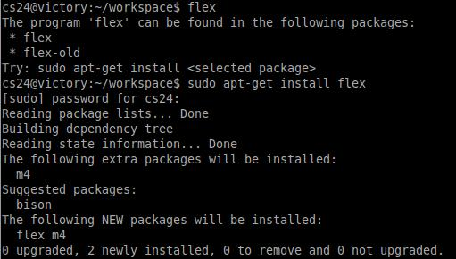

2. 環境構築
Linux（Ubuntu）の場合
flex と bison を apt-get install でインストールします．
- flex
$ sudo apt-get install flex
- bison
$ sudo apt-get install bison
インストール例

Macの場合
flexとyaccはXcodeにバンドルされています．既にXcodeをインストールしている人は，flexとyaccもインストールされている可能性があるので，確認してみて下さい．
インストールされていない場合は，下記のいずれかの方法を試してみて下さい．
-
方法1 : Xcodeをインストールする．
OSのバージョンにあったXcodeをインストールしてください．
※コマンドラインから使いたい場合は，Xcodeの「Command Line Tools」をインストールする必要があるかもしれません．その場合，Xcodeを起動し，Preferences -> Downloadsからダウンロードしてください．
-
方法2 : パッケージマネージャ(homebrew，macport等)でインストールする．
例えばhomebrewの場合，flexとbisonがインストール可能だと思います．
-
方法3 : 自分でmakeする．
- flexの公式サイトからソースをダウンロードします．
- ダウンロードしたファイルは，tar.gzまたは，tar.bz2で圧縮されているはずなので，解凍して下さい．
- ダウンロードしたディレクトリに移動し，makeします．下記のコマンドでmakeできると思います．
$ ./configure
$ make
$ make install
$ make clean
yacc(bison)も同様に，bisonの公式サイトからソースをダウンロードしてきて，インストールして下さい．
Windowsの場合
-
方法１ : cygwinを使う．
cygwinは，Windows上でUNIX系OSの実行環境を構築するためのツールです．Windowsのコマンドプロンプトの代わりに，cygwin上で課題を行うことができます．
cygwinのインストール時に，本授業に必要なツールも同時にインストールすることができます．
[cygwin公式サイト]
cygwinは上記の公式サイトからダウンロードした「setup.exe」を実行することでインストール出来ます．インストール方法の詳細は公式サイトにも解説がありますが，web検索でたくさんの解説を見つけることができるので，そちらも参考にしてみてください．
※インストール時の注意
cygwinのインストール時に，同時にインストールするソフトウェアを選択する段階があると思います．そのとき gcc，flex，yacc あるいは bison を追加して下さい．
分からなければ「ALL Install」で全てのソフトウェアをインストールしても良いと思います．
ただし，All Installする場合インストール完了までに数時間かかる恐れがあります．有線LANを使用し，時間に余裕を持って準備を進めて下さい．
※既にcygwinをインストールしている場合
まず，flex，gcc，yacc，bisonがインストールされているか調べましょう．
cygwinを起動して，次のコマンドを実行してみてください．
インストールされていれば，バージョン情報が出力されるはずです．
- flex
$ flex -V
flex 2.5.35
- gcc
$ gcc --version
gcc (GCC) 4.3.4 20090804 (release) 1
Copyright (C) 2008 Free Software Foundation, Inc.
This is free software; see the source for copying conditions. There is NO
warranty; not even for MERCHANTABILITY or FITNESS FOR A PARTICULAR PURPOSE.
- yacc または bison
$ yacc -V
bison (GNU Bison) 2.4.2
Written by Robert Corbett and Richard Stallman.
Copyright (C) 2010 Free Software Foundation, Inc.
This is free software; see the source for copying conditions. There is NO
warranty; not even for MERCHANTABILITY or FITNESS FOR A PARTICULAR PURPOSE.
$ bison -V
bison (GNU Bison) 2.4.2
Written by Robert Corbett and Richard Stallman.
Copyright (C) 2010 Free Software Foundation, Inc.
This is free software; see the source for copying conditions. There is NO
warranty; not even for MERCHANTABILITY or FITNESS FOR A PARTICULAR PURPOSE.
インストールできていないツールがある場合は，cygwinから不足したツールを追加でインストールして下さい．
-
方法２ : 個別にインストール．
C言語のコンパイル環境が整っている場合，cygwinを使わずに，不足したツールを個別にインストールしてもかまいません．
[参考ページ]